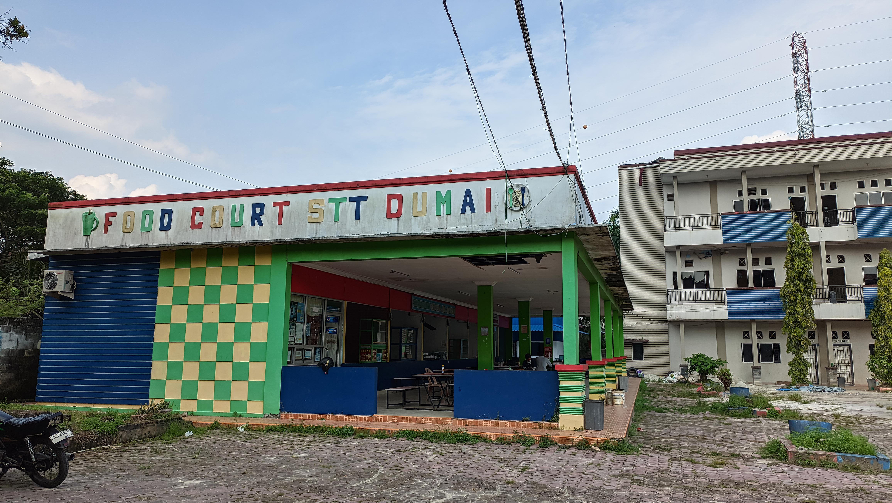
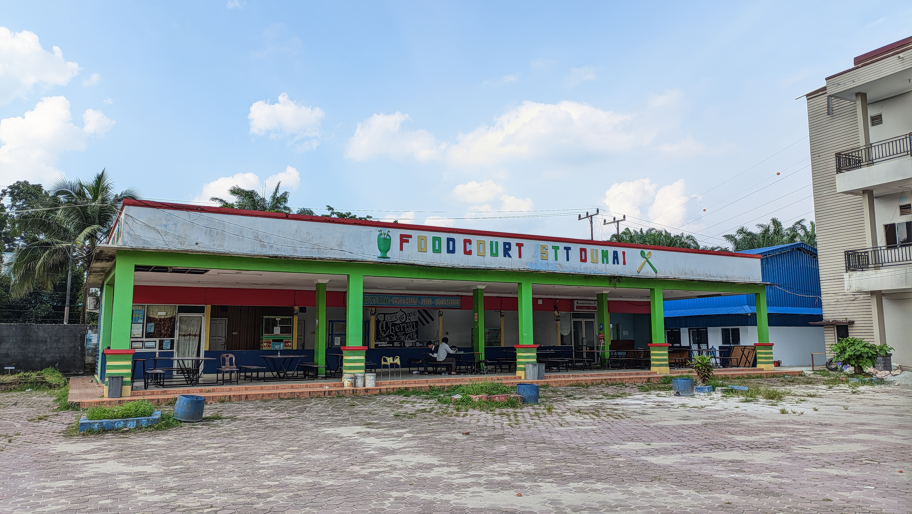
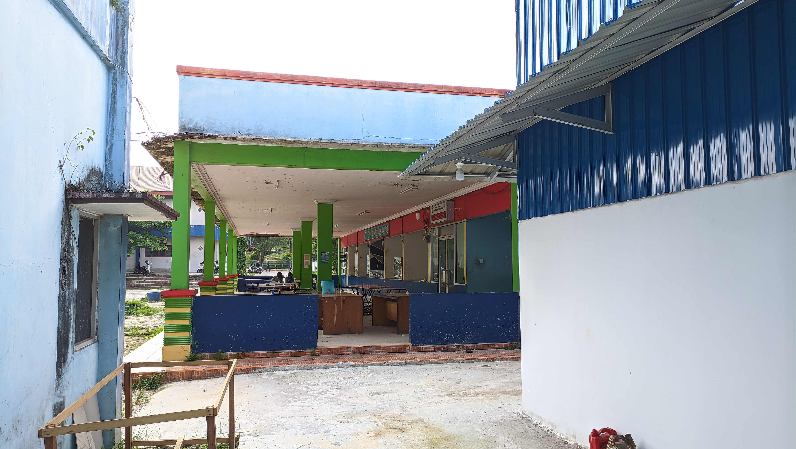

Fasilitas kantin yang nyaman dan bersih di lingkungan Institut Teknologi & Bisnis Riau Pesisir untuk mendukung kebutuhan makan dan minum mahasiswa serta civitas akademika.
4
Kantin
Free
WiFi
Nyaman
Tempat Duduk
Scroll
Informasi lengkap tentang fasilitas kantin di lingkungan kampus
ITBRP memiliki 4 kantin yang tersebar di area kampus. Setiap kantin menyediakan beragam pilihan makanan dan minuman dengan harga terjangkau untuk memenuhi kebutuhan mahasiswa, dosen, dan tenaga kependidikan.
4
Total Kantin
Setiap kantin di ITBRP dilengkapi dengan fasilitas yang nyaman untuk menunjang pengalaman makan yang menyenangkan.
WiFi Gratis
Akses internet cepat selama berada di area kantin
Meja & Tempat Duduk
Tersedia meja dan kursi yang nyaman untuk bersantap
Nikmati akses internet gratis selama berada di area kantin. Cocok untuk bersantai sambil mengerjakan tugas.
Area makan yang nyaman dengan meja dan kursi yang cukup untuk menampung mahasiswa.
Dokumentasi Kantin ITBRP — klik foto untuk melihat lebih besar

View Depan Kantin
Area depan kantin yang bersih dan tertata

View Samping Kantin
Area samping dengan tempat duduk yang nyaman

View Belakang Kantin
Area belakang dengan suasana santai
Jelajahi Kantin ITBRP secara interaktif melalui virtual tour 360° dari mana saja
Klik tombol play untuk memulai tur interaktif Kantin ITBRP